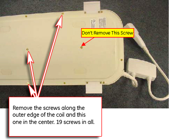
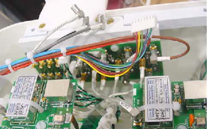
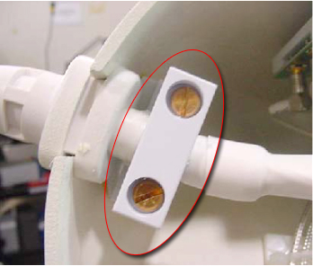

Operating Documentation
Direction 5440001-3, Rev# 6
Signa HDxt Service Methods
Module Version 3.0, Version Date 5/18/09
Operating Documentation |
| Required Persons | Preliminary Reqs | Procedure | Finalization |
|---|---|---|---|
| 1 | Not Applicable | 30 mins | Not Applicable |
| Item | Qty | Effectivity | Part# | Manufacturer | |
|---|---|---|---|---|---|
| Standard Tool Set | 1 | - | - | - | |
| Item | Qty | Effectivity | Part# | Manufacturer | |
|---|---|---|---|---|---|
| FRU Cable, GE Signa HD 1.5T 8CH CTL | 1 | - | 2417263 | - | |
Lay the CTL coil on its side and remove the 19 screws holding the base cover on the unit as shown in Illustration 1.
Illustration 1: Remove Screws

Disconnect the RF cables and the DC wires from the Multiplexer Board, as shown in Illustration 2.
Illustration 2: Disconnect Cabling From Multiplexer Board

Remove two screws on the clamp of Strain Relief as shown in Illustration 3.
Illustration 3: Remove Two Strain Relief Screws

Remove the cable from the base of the coil.
Insert the new cable to the coil.
Connect the DC wires to the multiplexer board.
Connect the corresponding RF cables to the multiplexer board (note: the cables are marked for proper placement).
Place the clamp and tighten the two screws.
Replace the bottom cover and the 19 retaining screws.
No finalization steps.